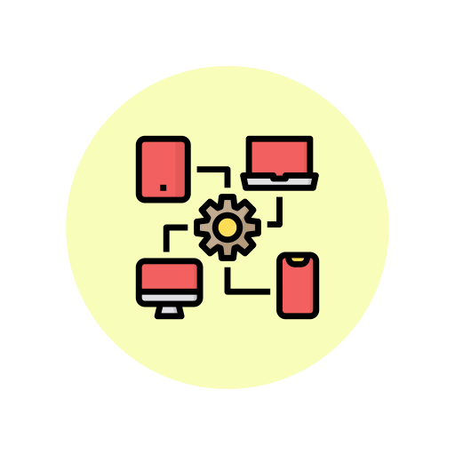

<ion-header>
    <ion-toolbar>
        <ion-back-button slot="start"></ion-back-button>
        <ion-title class="ion-text-center">Telemetries</ion-title>

        <ion-icon class="ionadd" name="add-circle-outline" size="large" slot="end"></ion-icon>


    </ion-toolbar>
</ion-header>

<ion-content>
    <!--  <div class="ion-text-right">
    <ion-button rel="rel" expand="full" size="default" shape="round" fill="solid" [routerLink]="['add-device-template']">Add device template</ion-button>
</div> -->

    <ion-list-header>
        <ion-label>List of telemetries</ion-label>

    </ion-list-header>

    <ion-list>
        <div class="telemetry" *ngFor="let deviceTelemetry of deviceTemplateTelemetries">

            <ion-item-sliding>
                <ion-item lines="inset" detail [routerLink]="['profile-telemetry']">


                    <ion-avatar slot="start">
                        
                    </ion-avatar>
                    <ion-label>{{deviceTelemetry['Name']}}</ion-label>
                </ion-item>

                <ion-item-options side="end">
                    <ion-item-option color="danger" expandable>
                        <ion-icon slot="icon-only" name="trash-outline"></ion-icon>
                    </ion-item-option>
                </ion-item-options>
            </ion-item-sliding>
        </div>
    </ion-list>


</ion-content>